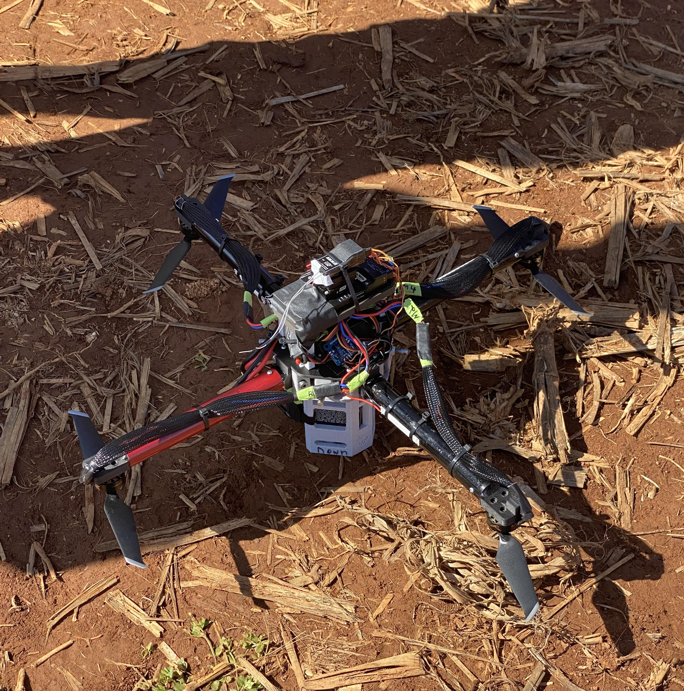
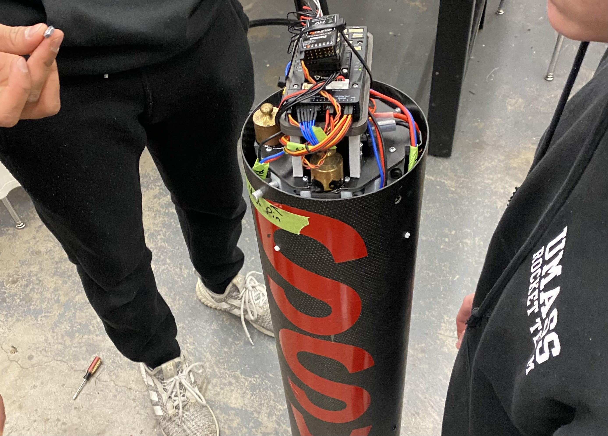

← All Projects
UMass Rocket Team — In-Flight Deployable Drone
AerospaceDesigned and built a drone that deploys autonomously from the nose cone of a 14-foot competition rocket during its descent phase.
The drone uses onboard sensors and GPS to detect deployment, stabilize, and navigate to a landing zone autonomously — requiring compact electronics, reliable deployment mechanics, and robust flight software in a tightly constrained form factor.
This project combined aerospace, embedded systems, and autonomous flight disciplines, and was built and flown as part of UMass Amherst's competitive rocketry program.
